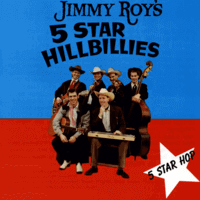

Jimmy Roy's 5 Star Hillbillies - 5 Star Hop (Album, 1993)
01 - Midnight Ride (3:59)
02 - My Baby's Just Like Money (2:20)
03 - Railroad Bridge (3:04)
04 - Rock That Rock (2:44)
05 - It's Cold Outside (3:39)
06 - Jimmy's 5 Star Hop (1:49)
07 - I'm Not Stupid (2:47)
08 - Go Boy Go (3:02)
09 - Careless (3:10)
10 - Start All Over (3:24)
11 - Mouring All Night (2:45)
12 - Pierres Boogie (2:03)
13 - Golden Chains (3:26)
14 - Wore To A Frazzel (3:08)
15 - Cadillac In A Model "A" (2:41)
16 - Cried In My Sleep (2:43)
17 - Uh Babe (2:43)
18 - Lotta Money (2:59)
19 - Misery (2:58)
20 - Oakie Boogie (2:27)
21 - Trademark - Slow (3:26)
22 - Trademark - Fast (2:52)
23 - Talking In Your Sleep (3:00)
24 - Hangman (3:11)
© Fury Records :: [FCD 3029]
Notes
Review
148/366 (Project 366)
Hillbilly and authentic Rockabilly mood with good rockin' and rollin', country and boppin' tunes. Superb.